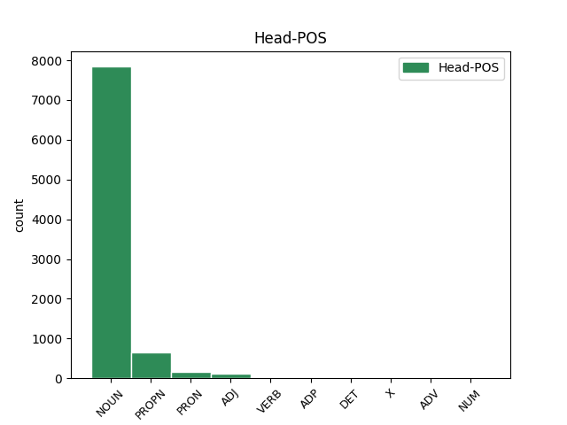

Distribution of features within this leaf

Agreement Rules sorted by frequency.
- When the dependent token is the conjunct(conj) of the head token, and the dependent token is NOUN.
1 Doch _ _ _ _ 0 _ _ _
2 kann _ _ _ _ 0 _ _ _
3 man _ _ _ _ 0 _ _ _
4 alle _ _ _ _ 0 _ _ _
5 diese _ _ _ _ 0 _ _ _
6 Formen _ _ _ _ 0 _ _ _
7 auf _ _ _ _ 0 _ _ _
8 das _ _ _ _ 0 _ _ _
9 Wort _ _ _ _ 0 _ _ _
10 dyaus _ _ _ _ 0 _ _ _
11 zurückführen _ _ _ _ 0 _ _ _
12 , _ _ _ _ 0 _ _ _
13 das _ _ _ _ 0 _ _ _
14 als _ _ _ _ 0 _ _ _
15 " _ _ _ _ 0 _ _ _
16 Erscheinung Erscheinung NOUN NN Case=Nom|Gender=Fem|Number=Sing 0 _ _ _
17 " _ _ _ _ 0 _ _ _
18 oder _ _ _ _ 0 _ _ _
19 " _ _ _ _ 0 _ _ _
20 Strahlung Strahlung NOUN NN Case=Nom|Gender=Fem|Number=Sing 16 conj _ SpaceAfter=No
21 " _ _ _ _ 0 _ _ _
22 aufgefasst _ _ _ _ 0 _ _ _
23 werden _ _ _ _ 0 _ _ _
24 kann _ _ _ _ 0 _ _ _
25 . _ _ _ _ 0 _ _ _
1 Verbesserung Verbesserung NOUN NN Case=Nom|Gender=Fem|Number=Sing 0 _ _ _
2 der _ _ _ _ 0 _ _ _
3 Wasserqualität Wasserqualität NOUN NN Case=Gen|Gender=Fem|Number=Sing 1 mod _ _
4 durch _ _ _ _ 0 _ _ _
5 Sauerstoffaufnahme _ _ _ _ 0 _ _ _
6 . _ _ _ _ 0 _ _ _
1 Rudolf Rudolf PROPN NE Case=Nom|Gender=Masc|Number=Sing 0 _ _ _
2 Uhlenhaut _ _ _ _ 0 _ _ _
3 , _ _ _ _ 0 _ _ _
4 Leiter Leiter NOUN NN Case=Nom|Gender=Masc|Number=Sing 1 appos _ _
5 des _ _ _ _ 0 _ _ _
6 Pkw _ _ _ _ 0 _ _ _
7 - _ _ _ _ 0 _ _ _
8 Versuchs _ _ _ _ 0 _ _ _
9 bei _ _ _ _ 0 _ _ _
10 Daimler _ _ _ _ 0 _ _ _
11 - _ _ _ _ 0 _ _ _
12 Benz _ _ _ _ 0 _ _ _
13 , _ _ _ _ 0 _ _ _
14 nahm _ _ _ _ 0 _ _ _
15 seine _ _ _ _ 0 _ _ _
16 Idee _ _ _ _ 0 _ _ _
17 eines _ _ _ _ 0 _ _ _
18 leichten _ _ _ _ 0 _ _ _
19 Rohrrahmens _ _ _ _ 0 _ _ _
20 wieder _ _ _ _ 0 _ _ _
21 auf _ _ _ _ 0 _ _ _
22 , _ _ _ _ 0 _ _ _
23 mit _ _ _ _ 0 _ _ _
24 dem _ _ _ _ 0 _ _ _
25 er _ _ _ _ 0 _ _ _
26 sich _ _ _ _ 0 _ _ _
27 einige _ _ _ _ 0 _ _ _
28 Jahre _ _ _ _ 0 _ _ _
29 zuvor _ _ _ _ 0 _ _ _
30 schon _ _ _ _ 0 _ _ _
31 befasst _ _ _ _ 0 _ _ _
32 hatte _ _ _ _ 0 _ _ _
33 . _ _ _ _ 0 _ _ _
1 Hersteller Hersteller NOUN NN Case=Nom|Gender=Masc|Number=Sing 7 unk _ SpaceAfter=No
2 : _ _ _ _ 0 _ _ _
3 GlaxoSmithKline _ _ _ _ 0 _ _ _
4 ) _ _ _ _ 0 _ _ _
5 ist _ _ _ _ 0 _ _ _
6 ein _ _ _ _ 0 _ _ _
7 Arzneistoff Arzneistoff NOUN NN Case=Nom|Gender=Masc|Number=Sing 0 _ _ _
8 zu _ _ _ _ 0 _ _ _
9 der _ _ _ _ 0 _ _ _
10 Behandlung _ _ _ _ 0 _ _ _
11 von _ _ _ _ 0 _ _ _
12 HIV _ _ _ _ 0 _ _ _
13 - _ _ _ _ 0 _ _ _
14 1 _ _ _ _ 0 _ _ _
15 - _ _ _ _ 0 _ _ _
16 infizierten _ _ _ _ 0 _ _ _
17 Patienten _ _ _ _ 0 _ _ _
18 in _ _ _ _ 0 _ _ _
19 dem _ _ _ _ 0 _ _ _
20 Rahmen _ _ _ _ 0 _ _ _
21 einer _ _ _ _ 0 _ _ _
22 antiretroviralen _ _ _ _ 0 _ _ _
23 Therapie _ _ _ _ 0 _ _ _
24 ( _ _ _ _ 0 _ _ _
25 HAART _ _ _ _ 0 _ _ _
26 ) _ _ _ _ 0 _ _ _
27 und _ _ _ _ 0 _ _ _
28 der _ _ _ _ 0 _ _ _
29 chronischen _ _ _ _ 0 _ _ _
30 HBV _ _ _ _ 0 _ _ _
31 - _ _ _ _ 0 _ _ _
32 Infektion _ _ _ _ 0 _ _ _
33 . _ _ _ _ 0 _ _ _
1 Die _ _ _ _ 0 _ _ _
2 historisch _ _ _ _ 0 _ _ _
3 wertvollen _ _ _ _ 0 _ _ _
4 Glasmalereien _ _ _ _ 0 _ _ _
5 zeigen _ _ _ _ 0 _ _ _
6 auf _ _ _ _ 0 _ _ _
7 der _ _ _ _ 0 _ _ _
8 linken _ _ _ _ 0 _ _ _
9 unteren _ _ _ _ 0 _ _ _
10 Scheibe _ _ _ _ 0 _ _ _
11 Maria _ _ _ _ 0 _ _ _
12 sitzend _ _ _ _ 0 _ _ _
13 mit _ _ _ _ 0 _ _ _
14 dem _ _ _ _ 0 _ _ _
15 Jesuskind _ _ _ _ 0 _ _ _
16 und _ _ _ _ 0 _ _ _
17 auf _ _ _ _ 0 _ _ _
18 der _ _ _ _ 0 _ _ _
19 unteren _ _ _ _ 0 _ _ _
20 rechten _ _ _ _ 0 _ _ _
21 Scheibe Scheibe NOUN NN Case=Dat|Gender=Fem|Number=Sing 0 _ _ _
22 die _ _ _ _ 0 _ _ _
23 Anbetung Anbetung NOUN NN Case=Nom|Gender=Fem|Number=Sing 21 comp:obj _ _
24 der _ _ _ _ 0 _ _ _
25 Heiligen _ _ _ _ 0 _ _ _
26 drei _ _ _ _ 0 _ _ _
27 Könige _ _ _ _ 0 _ _ _
28 . _ _ _ _ 0 _ _ _
1 Vor _ _ _ _ 0 _ _ _
2 allem _ _ _ _ 0 _ _ _
3 der _ _ _ _ 0 _ _ _
4 Zentralrat _ _ _ _ 0 _ _ _
5 Deutscher _ _ _ _ 0 _ _ _
6 Sinti _ _ _ _ 0 _ _ _
7 und _ _ _ _ 0 _ _ _
8 Roma _ _ _ _ 0 _ _ _
9 habe _ _ _ _ 0 _ _ _
10 sich _ _ _ _ 0 _ _ _
11 , _ _ _ _ 0 _ _ _
12 so _ _ _ _ 0 _ _ _
13 Yaron Yaron PROPN NE Case=Nom|Gender=Masc|Number=Sing 0 _ _ _
14 Matras _ _ _ _ 0 _ _ _
15 , _ _ _ _ 0 _ _ _
16 der _ _ _ _ 0 _ _ _
17 damalige _ _ _ _ 0 _ _ _
18 Hauptverantwortliche Hauptverantwortliche NOUN NN Case=Nom|Gender=Masc|Number=Sing 13 subj _ _
19 für _ _ _ _ 0 _ _ _
20 die _ _ _ _ 0 _ _ _
21 Pressearbeit _ _ _ _ 0 _ _ _
22 sowie _ _ _ _ 0 _ _ _
23 für _ _ _ _ 0 _ _ _
24 Beziehungen _ _ _ _ 0 _ _ _
25 zu _ _ _ _ 0 _ _ _
26 internationalen _ _ _ _ 0 _ _ _
27 Organisationen _ _ _ _ 0 _ _ _
28 , _ _ _ _ 0 _ _ _
29 sich _ _ _ _ 0 _ _ _
30 dem _ _ _ _ 0 _ _ _
31 entschieden _ _ _ _ 0 _ _ _
32 entgegengestellt _ _ _ _ 0 _ _ _
33 . _ _ _ _ 0 _ _ _
1 Mit _ _ _ _ 0 _ _ _
2 der _ _ _ _ 0 _ _ _
3 dem _ _ _ _ 0 _ _ _
4 Andenken Andenken NOUN NN Case=Dat|Gender=Neut|Number=Sing 9 comp:obl _ _
5 von _ _ _ _ 0 _ _ _
6 Johann _ _ _ _ 0 _ _ _
7 Peter _ _ _ _ 0 _ _ _
8 Hebel _ _ _ _ 0 _ _ _
9 gewidmeten gewidmet ADJ ADJA Case=Nom|Gender=Neut|Number=Plur 0 _ _ _
10 Plakete _ _ _ _ 0 _ _ _
11 werden _ _ _ _ 0 _ _ _
12 Menschen _ _ _ _ 0 _ _ _
13 aus _ _ _ _ 0 _ _ _
14 der _ _ _ _ 0 _ _ _
15 Oberrhein _ _ _ _ 0 _ _ _
16 - _ _ _ _ 0 _ _ _
17 Region _ _ _ _ 0 _ _ _
18 geehrt _ _ _ _ 0 _ _ _
19 , _ _ _ _ 0 _ _ _
20 die _ _ _ _ 0 _ _ _
21 " _ _ _ _ 0 _ _ _
22 die _ _ _ _ 0 _ _ _
23 sich _ _ _ _ 0 _ _ _
24 besondere _ _ _ _ 0 _ _ _
25 Verdienste _ _ _ _ 0 _ _ _
26 um _ _ _ _ 0 _ _ _
27 die _ _ _ _ 0 _ _ _
28 Landschaft _ _ _ _ 0 _ _ _
29 erworben _ _ _ _ 0 _ _ _
30 haben _ _ _ _ 0 _ _ _
31 , _ _ _ _ 0 _ _ _
32 sei _ _ _ _ 0 _ _ _
33 es _ _ _ _ 0 _ _ _
34 durch _ _ _ _ 0 _ _ _
35 künstlerisches _ _ _ _ 0 _ _ _
36 Schaffen _ _ _ _ 0 _ _ _
37 ( _ _ _ _ 0 _ _ _
38 Schriftsteller _ _ _ _ 0 _ _ _
39 , _ _ _ _ 0 _ _ _
40 Dichter _ _ _ _ 0 _ _ _
41 , _ _ _ _ 0 _ _ _
42 Maler _ _ _ _ 0 _ _ _
43 ) _ _ _ _ 0 _ _ _
44 oder _ _ _ _ 0 _ _ _
45 auf _ _ _ _ 0 _ _ _
46 dem _ _ _ _ 0 _ _ _
47 Gebiet _ _ _ _ 0 _ _ _
48 der _ _ _ _ 0 _ _ _
49 Denkmal _ _ _ _ 0 _ _ _
50 - _ _ _ _ 0 _ _ _
51 und _ _ _ _ 0 _ _ _
52 Heimatpflege _ _ _ _ 0 _ _ _
53 . _ _ _ _ 0 _ _ _
54 " _ _ _ _ 0 _ _ _
1 Der _ _ _ _ 0 _ _ _
2 ehemalige _ _ _ _ 0 _ _ _
3 MTV _ _ _ _ 0 _ _ _
4 - _ _ _ _ 0 _ _ _
5 Moderator _ _ _ _ 0 _ _ _
6 Adam _ _ _ _ 0 _ _ _
7 Curry _ _ _ _ 0 _ _ _
8 gilt _ _ _ _ 0 _ _ _
9 auf _ _ _ _ 0 _ _ _
10 Produzentenseite _ _ _ _ 0 _ _ _
11 als _ _ _ _ 0 _ _ _
12 Pionier _ _ _ _ 0 _ _ _
13 des _ _ _ _ 0 _ _ _
14 damals _ _ _ _ 0 _ _ _
15 noch _ _ _ _ 0 _ _ _
16 " _ _ _ _ 0 _ _ _
17 Audioblogging Audioblogging NOUN NN Case=Acc|Gender=Neut|Number=Sing 19 subj@pass _ SpaceAfter=No
18 " _ _ _ _ 0 _ _ _
19 genannten genannt ADJ ADJA Case=Gen|Gender=Neut|Number=Sing 0 _ _ _
20 Verfahrens _ _ _ _ 0 _ _ _
21 . _ _ _ _ 0 _ _ _
1 John _ _ _ _ 0 _ _ _
2 Robartes _ _ _ _ 0 _ _ _
3 hatte _ _ _ _ 0 _ _ _
4 sich _ _ _ _ 0 _ _ _
5 in _ _ _ _ 0 _ _ _
6 den _ _ _ _ 0 _ _ _
7 1650er _ _ _ _ 0 _ _ _
8 Jahren _ _ _ _ 0 _ _ _
9 , _ _ _ _ 0 _ _ _
10 der _ _ _ _ 0 _ _ _
11 Regierungszeit _ _ _ _ 0 _ _ _
12 des _ _ _ _ 0 _ _ _
13 Lordprotektors _ _ _ _ 0 _ _ _
14 Oliver _ _ _ _ 0 _ _ _
15 Cromwell _ _ _ _ 0 _ _ _
16 , _ _ _ _ 0 _ _ _
17 nach _ _ _ _ 0 _ _ _
18 Cornwall _ _ _ _ 0 _ _ _
19 zurückgezogen _ _ _ _ 0 _ _ _
20 , _ _ _ _ 0 _ _ _
21 wo _ _ _ _ 0 _ _ _
22 er _ _ _ _ 0 _ _ _
23 1664 _ _ _ _ 0 _ _ _
24 die _ _ _ _ 0 _ _ _
25 Genehmigung _ _ _ _ 0 _ _ _
26 zu _ _ _ _ 0 _ _ _
27 der _ _ _ _ 0 _ _ _
28 Einzäunung _ _ _ _ 0 _ _ _
29 eines _ _ _ _ 0 _ _ _
30 340 _ _ _ _ 0 _ _ _
31 Hektar Hektar NOUN NN Case=Acc|Gender=Neut|Number=Plur 32 udep _ _
32 großen groß VERB ADJA Case=Gen|Gender=Neut|Number=Sing 0 _ _ _
33 Wildparks _ _ _ _ 0 _ _ _
34 erhielt _ _ _ _ 0 _ _ _
35 . _ _ _ _ 0 _ _ _
1 Der _ _ _ _ 0 _ _ _
2 Rauch _ _ _ _ 0 _ _ _
3 wird _ _ _ _ 0 _ _ _
4 zunächst _ _ _ _ 0 _ _ _
5 durch _ _ _ _ 0 _ _ _
6 ein _ _ _ _ 0 _ _ _
7 Bowl Bowl NOUN NN Case=Acc|Gender=Neut|Number=Sing 8 comp:pred _ _
8 genanntes genannt ADJ ADJA Case=Acc|Gender=Neut|Number=Sing 0 _ _ _
9 , _ _ _ _ 0 _ _ _
10 mit _ _ _ _ 0 _ _ _
11 Wasser _ _ _ _ 0 _ _ _
12 gefülltes _ _ _ _ 0 _ _ _
13 Gefäß _ _ _ _ 0 _ _ _
14 gezogen _ _ _ _ 0 _ _ _
15 . _ _ _ _ 0 _ _ _
Disagree Examples:
1 Sehr _ _ _ _ 0 _ _ _
2 gute _ _ _ _ 0 _ _ _
3 Beratung _ _ _ _ 0 _ _ _
4 , _ _ _ _ 0 _ _ _
5 schnelle _ _ _ _ 0 _ _ _
6 Behebung Behebung NOUN NN Case=Nom|Gender=Fem|Number=Sing 0 _ _ _
7 der _ _ _ _ 0 _ _ _
8 Probleme Problem NOUN NN Case=Gen|Gender=Neut|Number=Plur 6 mod _ SpaceAfter=No
9 , _ _ _ _ 0 _ _ _
10 so _ _ _ _ 0 _ _ _
11 stelle _ _ _ _ 0 _ _ _
12 ich _ _ _ _ 0 _ _ _
13 mir _ _ _ _ 0 _ _ _
14 Kundenservice _ _ _ _ 0 _ _ _
15 vor _ _ _ _ 0 _ _ _
16 . _ _ _ _ 0 _ _ _
1 Ich _ _ _ _ 0 _ _ _
2 bin _ _ _ _ 0 _ _ _
3 seit _ _ _ _ 0 _ _ _
4 längerer _ _ _ _ 0 _ _ _
5 Zeit _ _ _ _ 0 _ _ _
6 zu _ _ _ _ 0 _ _ _
7 der _ _ _ _ 0 _ _ _
8 Behandlung Behandlung NOUN NN Case=Dat|Gender=Fem|Number=Sing 0 _ _ _
9 verschiedenster _ _ _ _ 0 _ _ _
10 " _ _ _ _ 0 _ _ _
11 Leiden Leiden NOUN NN Case=Gen|Gender=Neut|Number=Plur 8 mod _ SpaceAfter=No
12 " _ _ _ _ 0 _ _ _
13 in _ _ _ _ 0 _ _ _
14 der _ _ _ _ 0 _ _ _
15 Physiotherapieraxis _ _ _ _ 0 _ _ _
16 " _ _ _ _ 0 _ _ _
17 Gaby _ _ _ _ 0 _ _ _
18 Montag _ _ _ _ 0 _ _ _
19 " _ _ _ _ 0 _ _ _
20 in _ _ _ _ 0 _ _ _
21 dem _ _ _ _ 0 _ _ _
22 Vital _ _ _ _ 0 _ _ _
23 Center _ _ _ _ 0 _ _ _
24 und _ _ _ _ 0 _ _ _
25 kann _ _ _ _ 0 _ _ _
26 ausschließlich _ _ _ _ 0 _ _ _
27 Positives _ _ _ _ 0 _ _ _
28 berichten _ _ _ _ 0 _ _ _
29 ! _ _ _ _ 0 _ _ _
1 Ob _ _ _ _ 0 _ _ _
2 bei _ _ _ _ 0 _ _ _
3 der _ _ _ _ 0 _ _ _
4 Terminvergabe Terminvergabe NOUN NN Case=Dat|Gender=Fem|Number=Sing 0 _ _ _
5 , _ _ _ _ 0 _ _ _
6 den _ _ _ _ 0 _ _ _
7 Behandlungsräumen Behandlungsraum NOUN NN Case=Dat|Gender=Masc|Number=Plur 4 conj _ _
8 oder _ _ _ _ 0 _ _ _
9 den _ _ _ _ 0 _ _ _
10 individuell _ _ _ _ 0 _ _ _
11 zugeschnittenen _ _ _ _ 0 _ _ _
12 Trainingsplänen _ _ _ _ 0 _ _ _
13 sind _ _ _ _ 0 _ _ _
14 alle _ _ _ _ 0 _ _ _
15 Mitarbeiter _ _ _ _ 0 _ _ _
16 äußerst _ _ _ _ 0 _ _ _
17 kompetent _ _ _ _ 0 _ _ _
18 und _ _ _ _ 0 _ _ _
19 flexibel _ _ _ _ 0 _ _ _
20 . _ _ _ _ 0 _ _ _
1 Für _ _ _ _ 0 _ _ _
2 eine _ _ _ _ 0 _ _ _
3 300 _ _ _ _ 0 _ _ _
4 Euro _ _ _ _ 0 _ _ _
5 teuere _ _ _ _ 0 _ _ _
6 Torte _ _ _ _ 0 _ _ _
7 von _ _ _ _ 0 _ _ _
8 einem _ _ _ _ 0 _ _ _
9 angeblichen _ _ _ _ 0 _ _ _
10 Meisterkonditor _ _ _ _ 0 _ _ _
11 war _ _ _ _ 0 _ _ _
12 das _ _ _ _ 0 _ _ _
13 einfach _ _ _ _ 0 _ _ _
14 nur _ _ _ _ 0 _ _ _
15 furchtbar _ _ _ _ 0 _ _ _
16 -- _ _ _ _ 0 _ _ _
17 die _ _ _ _ 0 _ _ _
18 gelieferte _ _ _ _ 0 _ _ _
19 Torte _ _ _ _ 0 _ _ _
20 hatte _ _ _ _ 0 _ _ _
21 keinerlei _ _ _ _ 0 _ _ _
22 Ähnlichkeit _ _ _ _ 0 _ _ _
23 mit _ _ _ _ 0 _ _ _
24 dem _ _ _ _ 0 _ _ _
25 Bild Bild NOUN NN Case=Dat|Gender=Neut|Number=Sing 0 _ _ _
26 der _ _ _ _ 0 _ _ _
27 Torte Torte NOUN NN Case=Gen|Gender=Fem|Number=Sing 25 mod _ _
28 die _ _ _ _ 0 _ _ _
29 wir _ _ _ _ 0 _ _ _
30 haben _ _ _ _ 0 _ _ _
31 wollten _ _ _ _ 0 _ _ _
32 ( _ _ _ _ 0 _ _ _
33 welches _ _ _ _ 0 _ _ _
34 wir _ _ _ _ 0 _ _ _
35 ihm _ _ _ _ 0 _ _ _
36 ja _ _ _ _ 0 _ _ _
37 überlassen _ _ _ _ 0 _ _ _
38 hatten _ _ _ _ 0 _ _ _
39 ) _ _ _ _ 0 _ _ _
40 . _ _ _ _ 0 _ _ _
1 Fachlich _ _ _ _ 0 _ _ _
2 kompetent _ _ _ _ 0 _ _ _
3 , _ _ _ _ 0 _ _ _
4 sehr _ _ _ _ 0 _ _ _
5 gute _ _ _ _ 0 _ _ _
6 Beratung Beratung NOUN NN Case=Nom|Gender=Fem|Number=Sing 0 _ _ _
7 und _ _ _ _ 0 _ _ _
8 ein _ _ _ _ 0 _ _ _
9 freundliches _ _ _ _ 0 _ _ _
10 Team Team NOUN NN Case=Nom|Gender=Neut|Number=Sing 6 conj _ SpaceAfter=No
11 . _ _ _ _ 0 _ _ _